pydance User's Manual
About pydance
 Have you ever gone to an arcade and seen some crazy girl busting moves
on some sort of metal panel of sorts, or a guy making a fool of
himself trying to dance without watching the screen? Well, that game
is probably Dance Dance Revolution, or DDR for short, which has been a
hit in Asian countries for awhile and is finally getting popular in
Europe and North America. It might also have been a similar game, such
as Pump It Up, or EZ2 Dancer.
Have you ever gone to an arcade and seen some crazy girl busting moves
on some sort of metal panel of sorts, or a guy making a fool of
himself trying to dance without watching the screen? Well, that game
is probably Dance Dance Revolution, or DDR for short, which has been a
hit in Asian countries for awhile and is finally getting popular in
Europe and North America. It might also have been a similar game, such
as Pump It Up, or EZ2 Dancer.
pydance lets you play these games, and others like them, on
your computer, either with the keyboard or with a custom controller.
What you do is watch the screen as colored arrows move up the screen.
As soon as they cover up stationary arrows at the top, you step (or
press) the corresponding direction, in time with the beat of the
music.
This manual is designed to guide you through the process of
getting and installing pydance, finding songs, setting it up, and
dancing the night away. In addition, it has instructions for making
your own dance patterns or arrow graphics.
You don't need a dance mat to play pydance! It's a lot more fun
if you do, but you can also use your keyboard or gamepad.
System Requirements
These are rough guidelines. Depending on your graphical theme,
operating system, and so on, these requirements can differ. Although
it is possible to install and play pydance on systems slower than
this, the frame rate (and input latency) will be high enough that it
won't be much fun.
- Operating System
- GNU/Linux (Debian is the
easiest to use with pydance), Mac OS X, or Windows 2000 or higher. If
Windows is your OS of choice, we can't help you debug. If Mac OS X is
your OS of choice, we'll have plenty of trouble as well, but it's
likely to work in the end.
- Video Card
- A video card capable of doing 640x480x16bpp, which is most
video cards made since 1995. More recent cards will be faster, but
many old cards (ATI Radeon 7000, Matrox G200, nVidia TNT1) will be
able to run pydance acceptably.
- Processor
- We recommend a 1 GHz IA32 or 600 MHz PPC processor, or
better, for pydance. However, pydance will run acceptably on a P3-500
or equivalent.
- RAM
- At least 64MB is required. 128MB is very strongly
recommended. pydance uses RAM to cache graphics, so more RAM means the
UI will respond faster.
- Hard Disk Space
- pydance requires about 5MB (around 50MB if you don't already
have Python, SDL, or Pygame installed) of hard drive space to install.
Songs take 1MB to 6MB each, on average. If your RAM is low, you will
also need hard drive space for swap.
What pydance Can't Do
Upfront: This program is not perfect. There are some things it
can't do, either because we haven't gotten around to making it do them
yet, or because we don't want to. On the whole, these are very minor
things, but they're faults nonetheless.
- Play MP3s
- pydance has very poor MP3 support. Some MP3s will load;
most won't. Many will load, but then later cause pydance to crash,
even if you aren't using them for anything. Setting your Preview mode
to "Safe" can alleviate some of the problems, but not all. pydance is
capable of loading Ogg Vorbis (.ogg) and Wave (.wav) files without
issue, however.
- Display Most Background Movies
- Many dancing games have movies playing in the background.
pydance cannot load these movies.
- "Magic Dance" or "Challenge Mode" games
- "Magic Dance" was a rare DDR mode that appeared in DDR
Disney Rave. "Challenge Mode" appeared in DDR 4th mix and Ultramix
(for the X-Box). Neither of these modes is supported (nor are they
very popular).
- "Half Double" games
- "Half double" is a mode in Pump It Up that uses a different
part of each mat. pydance can emulate half double by playing regular
doubles mode, and having steps only appear on the relevant
panels.
- Sundry Proprietary Konamiisms
- pydance cannot read your Playstation memory cards, nor can
it register you for Internet Ranking scores.
- Be a DDR/PIU/EZ2/etc. Arcade Machine
- We're not aiming to perfectly clone the arcade games with
pydance; to start with, since we support at least 5 different arcade
machines, that's impossible. We have our own interface, scoring
system, and other ideas about what makes a fun dancing game.
(Technically, if you put a computer running pydance inside an arcade
cabinet and attached some pads and a keyboard, I guess it would be an
arcade machine; but it still won't look like the other games very
much.)
- Network Play
- Although a future version of pydance might have
network support, the current version does not. The best way to ensure
that pydance does have network support in the future is to help write
it yourself.
- Edit Dance Patterns Graphically
- There is no graphical step pattern editor for pydance's
.dance format; instead, you can use a text editor.
Installing pydance
Throughout the install guide, two path "aliases" will be used.
pydance_path refers to the place you're running
pydance from (e.g. /usr/share/games/pydance/,
/home/myuser/pydance/, or C:\games\pydance\).
rc_path refers to a "user-specific" path. On Unix,
this is ~/.pydance/. On Mac OS X, this is
~/Library/Preferences/pydance/. On Windows, this is the same
as the place you unpacked pydance.
This guide always uses '/' to separate directories. Windows
users can also use '\' which they might be more accustomed to.
Getting Python and Pygame
pydance is written in the Python programming language, and uses
the Pygame game programming
library. While this makes the program small and easy to develop, it
also results in a few more things to download.
More detailed (and/or recent) instructions for installing
Python and Pygame are available at the pydance download page.
Unix
You will need Python 2.4, and Pygame 1.8.1. The pydance download page
contains links and information on how to get the packages you need.
Usually, these will be easy to find, or may even already be
installed.
Mac OS X
You want the Pygame
kitchen sink install, which contains everything you'll need.
Windows
Download a recent version of Python
2.4, and Pygame
1.8.1.
Getting pydance
To get the latest version of pydance, visit the pydance download page. It
is available as a .zip or a .tar.gz file. The site also contains
information about installing from packages for Debian, Mandrake, and
Gentoo GNU/Linux, and also has a disk image for Mac OS X users.
Otherwise, to run pydance, you can often just download the
source, unpack it, and double click on pydance.py (or run
./pydance.py). The INSTALL file included with
pydance has detailed installation instructions for Unix.
Getting Songs
pydance requires songs to run properly. There are some free
songs available on
the pydance site, one of which is a "how to play" tutorial. In
addition, there are many other songs available on the web.
All song files must go in one of your song directories,
rc_path/songs/ and
pydance_path/songs/ (when you run pydance from a
terminal or command prompt, it will print a list of the directories
it's searching for songs).
Installing .dance Files
The .dance format is pydance's native step file format. .dance
files are accompanied by a music file (.ogg), and optionally a banner,
background, and CD title (all images). Assuming the .dance file is
properly constructed, you can simply put the .dance, .ogg, and other
files anywhere inside one of your song directories (however, they
should be in the same subdirectory).
.sm and .dwi Files
.sm and .dwi files are file formats used by other popular PC
dancing games. These require a little more structure than .dance
files; they must go in songdir/Mix Name/Song Name/,
where "Mix Name" is the name of the folder you want the song to be
in "Sort by Mix" mode, and "Song Name" is the name of the song itself.
Like .dance, .dwi and .sm are accompanied by music and image files,
but unlike .dance, you cannot put multiple .dwi or .sm files in the
same directory; you must put them in separate subdirectories according
to mix and song name.
You might also run across a few ".smzip" files. These are
ordinary zip files which you can open with any unzipping utility.
.ksf Files
.ksf files are yet another popular file format. Patterns in
.ksf format will come as multiple .ksf files, one or two audio files,
and zero to two image files. Like .dwi or .sm files, each song needs
its own directory, which contains all the .ksf, audio, and image files
for that song.
Some .ksf files might also need to have that directory named in
the format Artist Name - Song Name/.
Setting Up a Mat
pydance supports anything that looks like a joystick (or
gamepad) or keyboard to your operating system. This includes most mats
and adapters. However, some adapters map (e.g.) left and right onto a
single joystick axis, which means you can't press left and right at
the same time. This doesn't affect most games, but will affect
pydance.
Attaching a PSX/PS2 Mat
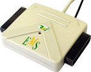 The most popular dance mats are
for Playstations or Playstation 2s. The best adapter for these is an EMSUSB2, which lets you connect two mats to a USB
port. The EMSUSB2 works in Linux, Mac OS X, and Windows, and any OS
that supports standard USB joysticks. You can also purchase dance mats
themselves at Level Six. If you
live outside of North America, buying
an EMSUSB2 from Lik-Sang might be easier, because they can ship
from Europe and Hong Kong as well. If you're looking for a high-quality dance pad, Cobalt Flux pads sells metal pads for $300. They have all 9 panels (center and the 8 directions), and work with pydance if you have a PS2-to-USB adapter like the EMSUSB2.
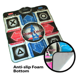 Some other adapters are also supported. The parallel
port adapter that comes with Buy'n'Shop DDR mats is supported on
many platforms, including Linux with the use of our ddrmat.o kernel
module. However, the EMSUSB2 is the most recommended.
The Radio Shack adapter will not work with pydance. Don't buy
it.
Attaching a Pump It Up Mat
Pump It Up mats come in two varieties, PS/2 and USB. The PS/2
variety is just a keyboard, that uses QESZC or 79513, and Escape. It
is supported immediately on any platform (but remember to map it with
the keyboard, and not joystick, controls). The USB variety is also a
keyboard, but doesn't inform the OS that it is such. On Windows there
are drivers to enable it (that come with the mat). On Linux, you can
use a USB to PS/2 adapter.
ParaParaParadise Controllers
Although the PPP controller appears as a USB joystick in all
operating systems, it does not send any events when a sensor is
triggered. So it will not work with pydance, under any OS.
Other Mats
There exist some other mats, such as the X-Box DDR mat, and
some mats that hook directly up to a parallel or USB port. If your OS
detects these as a joystick or keyboard, and they use buttons (or axes
and buttons) to record direction presses, pydance will
support them. If you are buying a mat and adapter for the first time,
though, we recommend avoiding these and going to the kinds that will
definitely work.
This is all you need to start playing pydance,
a few songs and a mat. If you're starting out you can skip the next
few sections, because those files are optional.
Getting Courses
pydance comes with some courses for "Nonstop Mode" (explained
later), but you can also download your own. Courses go in
rc_path/courses/ or
pydance_path/courses.
.crs Files
.crs files are the only courses supported by pydance
currently. These are used with .dwi files, usually. Like
those, they need to be in a subdirectory coursedir/Mix
Name/Course Name/. If a file exists with the same name as the
.crs file but ending in .png, (e.g. POP 8.crs and POP
8.png), then that image will be used on the course selection
screen.
Also, if there exists a file coursedir/Mix
Name.png, it will be displayed for that mix folder in the course
selector.
Getting CD Titles and Banners
The song selector lets you have banners for different folders.
These go under
pydance_or_rc_path/banners/sorttype/foldername.png.
For example, if you want a banner for your "DDR 4th Mix" folder, you
can name it ~/.pydance/banners/mix/DDR 4th Mix.png. If you
want one for the "Title: A" folder, use
~/.pydance/banners/title/a.png.
pydance also supports "CD titles", which are small images that
appear next to the song in the song selector, usually indicate what
album or game it is originally from. These go under
pydance_or_rc_path/cdtitles/, or in the same
directory as the song file itself.
Graphical Themes
There are many different arrow graphics that come with pydance,
and you can also add more. These go under
rc_path/themes/gfx/NxN/themename/
or
rc_path/themes/gfx/NxN/themename.zip
(the .zip file can be read without being unpacked). N is the
height and width of the images in the theme; different game modes use
different image sizes.
Announcer (DJ) Themes
pydance supports an announcer, who talks during the game,
giving you feedback on your progress. You should unzip (or untar) such
themes in rc_path/themes/dj, into a subdirectory of
their name. Announcers are still being developed, and don't work very
well.
Font Themes
pydance user interface can be customized to use True Type fonts different from the default Pygame font. Currently, VL PGothic Font is supported to display song titles and locales with Asian characters. Font theme configuration files and font files are found under rc_path/themes/font with a configuration file for each theme, describing what font and size combination should be used for each UI element.
Playing the Game
A dancing pad normally has somewhere between 6 and 11 buttons.
These buttons are used to control the pydance interface, as well as
play the game. When using them to navigate menus and so on, they have
slightly different names.
- Up, Down, Left, Right, Start, Select
- These are still the same. Start usually activates menu (the
same as Confirm), but sometimes does other things.
- Up Right, Center
- These are called "Confirm", and activate menu items.
- Up Left
- This is "Cancel", and backs out of menus or folders.
- Down Left and Down Right
- These are Page Up and Page
down, respectively.
Each player can have one keyboard key and one joystick button
assigned to each direction. In addition, some keys are automatically
assigned to a direction or action, if they aren't mapped to something
else.
- F11, f
- Toggles fullscreen or windowed display, under
Unix. This can't be used in the middle of a song.
- Backspace, s
- Change the sort order in a menu.
- Print Screen (or SysRq)
- Take a screenshot.
- Main arrow keys
- Up, down, left, and right.
- Escape, Insert
- Cancel.
- Tab
- Select.
- Return
- Confirm.
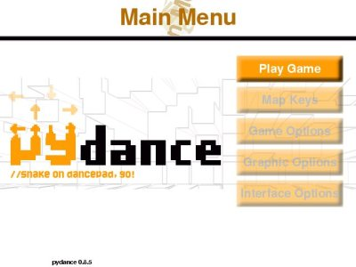 If your
songs are properly installed, this is the first screen you will see
after pydance finishes loading (if your songs aren't installed, you'll
get a reminder to install them).
- Up or Down
- Select an item in the menu.
- Confirm, Start, or Right
- Activate a menu item, or
cycle through options.
- Left
- Cycle through options the opposite direction,
or back up.
Play Game takes you to the game selection screen, and
is probably what you want to select. The Map Keys option
takes you to a screen to map your keyboard and joystick on. After you
do this once your settings will be saved, and you'll only need to
remap it after you change adapters or joysticks.
The other choices let you change pydance's global
configuration, or your theme settings.
- Game Options
- Autofail
- Stop the song and go to the grading
screen when all players have failed it.
- Assist Mode
- Play a click, or a unique sound for
each direction, when an arrow should be hit.
- Announcer
- Set your announcer theme.
- Themes...
- Set your graphical themes for all the
different modes pydance supports.
- Graphic Options
- Animation
- Animate arrows as they scroll up the
screen (if your theme supports it). Turning this off may increase your
framerate.
- Arrow Effects
- Have arrows "explode" at the top
of the screen by rotating and scaling them. Turning this off can
result in a higher framerate.
- Backgrounds
- Turn background images on or off.
This won't help your framerate.
- Brightness
- Adjust the brightness of background
images.
- Lyrics
- Display lyrics during songs. Turning this
off may increase your framerate slightly.
- Lyrics Color
- Set the color of displayed
lyrics.
- Interface Options
- Save Input
- When pydance exits, it can save your input settings, or
forget about them. Turning this off makes it forget them.
- Song Previews
- Turning this off disables the song clips that are played
in the song selector. Selecting "Safe" means that Ogg Vorbis files
will be previewed, but MP3s won't. If you're having trouble with
pydance crashing while previewing MP3s, set this to Safe.
- Folders
- If you have over 60 songs or courses, folders will be
displayed in the song and course selector for your convenience. If you
want to view them all in one display, you can turn these folders
off.
- Timer Display
- Turning this on results in a game timer being displayed
at the top of the screen (in seconds), and an FPS counter in the lower
left corner.
- Font
- Select the font theme being used. Current choices are the
pygame default and VLGothic for Asian fonts. Requires restart.
Game Types
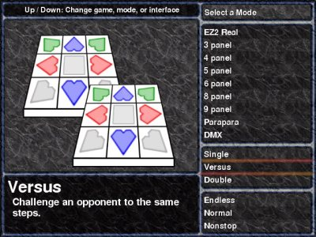 The game
selection screen is the one you'll see first after selecting "play
game". Here, you select what panels or controller you want to use, how
many people are playing, and whether you want to play individual songs
or a sequence of them.
- Up, Down
- Change your game, mode, or interface.
- Confirm, Start
- Advance your selection.
- Cancel
- Back up or go to the menu.
Panel Layouts
- 3, 4, 5, 6, 7, 8, or 9 panel
- Play "regular" dancing games. The directions used are
highlighted on the displayed dance mat. Note that many mats don't have
a center button, and so you won't be able to play 5 or 9 panel.
- Parapara
- Use the top half of the mat (left, up left, up, up right,
and right) to dance.
- DMX
- Like the DanceManiaX game, use the upper and lower
parts of the sensors, or left, up left, up right, and right.
- EZ2 and EZ2 Real
- Use three direction arrows, and left, down left, down right,
and right for the circular buttons. EZ2 only uses the top circular
ones, and EZ2 Real uses all four.
Game Type
- Single
- One player, one controller.
- Versus
- Two players on separate controllers, with the
same steps available to both. Player one will be on the left side, and
player two, on the right.
- Couple
- Two players, but with different steps
available for each. Both players must play the same difficulty
level.
- Double
- One player on two controllers! You have to
cross over between them as you play.
Interface
- Normal
- Select one song at a time to play.
- Nonstop
- Select a "course" of songs to play, without
breaks in between. pydance comes with several courses, and you can add
your own.
- Endless
- Select your difficulty level, and then keep
dancing until you fail.
The game selector will display modes you don't have any
available steps for, so after selecting your interface you might find
out you need to back up and pick different options.
The Song Selector
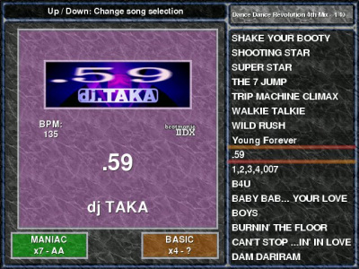 The song selector
is one of the "main screens" of the pydance interface. This is where
you pick the song you want to play, and the difficulty of it.
If you have more than 60 songs, the song selector will start up
in "folder mode", where your songs are organized into folders by
title, artist, BPM, mix name, difficulty level, or difficulty rating. You can turn off folders in the
Interface Options menu; they are automatically disabled if you have
fewer than 60 songs.
When a folder is selected, the number of songs inside it will
be displayed. When a song is selected, the title, artist, and BPM of
the song will be displayed, as will each player's selected difficulty,
the rating of that difficulty, and the top score on that difficulty.
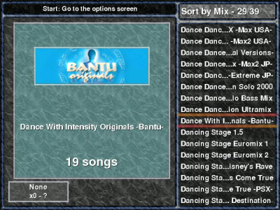
- Up, Down
- Select a song or folder
- Page Up, Page Down
- Move up or down 7 items a time
in the song list
- Left, right
- Change your difficulty (if the song has
more than one)
- Confirm
- Open a folder, or start a song
- Cancel
- Close a folder (and return to the folder
list), or exit (if currently viewing the folder list, or folders are
turned off)
- Start
- Switch to the Player Options screen
- Select
- Go to a random song, in the current folder
(if you're in a folder) or selected from all your songs (if you're
viewing the folder list)
In
addition to a name, each difficulty has a numerical rating, usually on
a scale of 1 to 9. The pydance tutorial song has a difficulty of 0,
and some very hard songs may have difficulties above 9.
Song Difficulties
Different games have used different names to refer to the same
difficulty level. For example, the easiest game mode is called "easy"
in TechnoMotion, "basic" in early versions of DDR, and "light" in
later versions. pydance uses the same colors to indicate what
difficulties have different names, but are the same. These colors are
also used on the nonstop screen, where only the first letter of the
difficulty is displayed.
- White
- Beginner, very easy
- Orange
- Basic, light, easy
- Red
- Trick, another, medium
- Green
- Heavy, maniac, hard
- Purple
- Crazy, hardcore, smaniac, expert
The names we recommend using are beginner, basic, trick,
maniac, hardcore (the names early DDR versions used, and the most
well-known), or beginner, easy, medium, hard, expert (which
are the easiest to understand for new players).
Players' Options
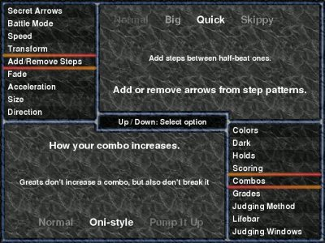 Pressing
Start on any of the song selection interfaces (the
song selector, nonstop, or endless) takes you to the players' options
screen. From here, you can change many per-player settings (sometimes
called "modifiers" or "mods"), as well as some global ones, like the
type of lifebar used.
When you exit the options screen, both players' options are
saved between songs. If you exit from the song selector (and go back
to the main menu or game selection screen) only the first player's are
remembered, and set as the default for both players. If you exit
pydance, these options are all reset.
There are too many different options and settings to explain
here, but each option has a description that is displayed with it when
you select it. If you're not sure what something does, just try it
out!
- Up, Down
- Select an option
- Left, Right
- Change the value of the current
option
- Start, Confirm, Cancel
- Return to the song
selector
Nonstop Mode
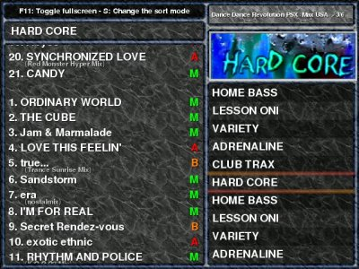 pydance
lets you play several songs in a row, also called a "course". In
nonstop mode you to select courses to play. The course selector works
much like the song selector, except you can't select difficulties.
Again, if you have over 60 courses, a folder display will be on by
default.
- Up, Down
- Select a song or folder
- Page Up, Page Down
- Move up or down 4 items a time
in the course list
- Confirm
- Open a folder, or start a course
- Cancel
- Close a folder (and return to the folder
list), or exit (if currently viewing the folder list or folders are
turned off)
- Start
- Switch to the Player Options screen
- Select
- Go to a random course, in the current folder
(if you're in a folder), or out of all your songs (if you're viewing
the folder list)
Included Courses
pydance comes with two sets of courses that you can play,
without having to install them.
- Player's Picks
-
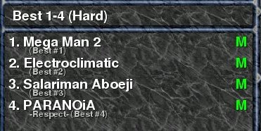 The Player's Picks courses are courses that
changed based on what songs you play in the regular game mode. The
courses contain songs with your best or worst scores, or songs you
have played often ("Likes") or least ("Dislikes"). You must play songs
at least once for them to appear anywhere on these lists (even in
Dislikes). Songs played in Nonstop or Endless mode don't affect these
lists.
- random.choose(songs)
- These courses consist of randomly selected songs, and will
be different each time you play them. In the All Random
course, even the difficulty you play on is random each time.
Endless Mode
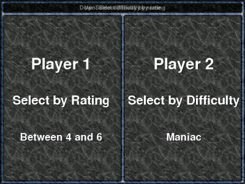 If
all you want to do is play a lot of songs in a row, Endless Mode will
keep selecting songs for you based on a preferred difficulty until you
fail. If you're going to play endless mode, you probably want a lot of
songs available. Otherwise it will get repetitive, or you won't have
enough songs to match both players' criteria.
- Up
- Select difficulty by name
- Down
- Select difficulty by rating
- Left, right
- Change your difficulty (left is easier,
right is harder)
- Confirm
- Start playing until you fail
- Cancel
- Return to the game selector
- Start
- Switch to the Players' Options screen
Mapping Keys
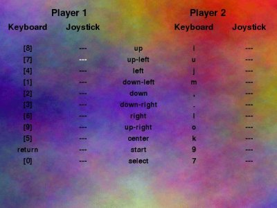 These is
the screen where you can set up input. Each direction, plus start and
select, can have one keyboard key and one joystick button assigned to
it.
The key mapping screen is only responds to the keyboard, and
isn't affected by your key mappings (so in case you screw up, you can
fix it). It can only be controlled by the arrow keys, and enter. Note
that if you map your regular arrow keys, enter, or any of the other
automatically configured keys here, they will only work as their new
function, not their old one.
- Arrow keys
- Move the selector (the white highlighted key)
- Enter
- Prompt for a new key or joystick button.
- Escape
- Cancel mapping of a key, or return to the main menu
Tips
Don't return to the center after each step. This
creates unnecessary foot movements. While this might make it easier to
keep your bearings on simple songs, it makes harder and faster ones
nearly impossible
Try practicing songs on 1.5x or 2x or one of the constant BPM modes. Some songs,
especially slow ones, are easier to read on higher speeds or when the scrolling speed is constant.
Don't stomp. Stomping might help you pick up the beat
better, but it also tires you out much faster. When you're tired, you
move slower and less accurately, and begin missing the beat
anyway.
Remember, the steps go with the music. It can be hard
to hear the part of the music the steps are following, especially if
it's not the main beat of the song. Try listening to the song with
headphones while watching the steps, and find which part of the rhythm
the steps follow.
Know your limits, and stay healthy. Keep hydrated;
drink water between songs. If you twist an ankle or injure
yourself, take a break. Stretch before and after playing.
Important Files
Main Configuration
The file rc_path/pydance.cfg is where your
options are stored. This file can be edited in a plain text editor.
Most of these can be changed by using the menus in the game, but the
following ones aren't (0 means off, and 1 means on):
- autogen 1|0
- On by default. If this is turned off, pydance won't
automatically generate steps for other modes when it knows about 4 or
5 panel steps.
- grading 1|0
- If this is off, pydance won't display the grading screen
after a song.
- showcombo 1|0
- If this is off, pydance won't display your combo count.
- stickycombo 1|0
- stickyjudge 1|0
- If these are off, pydance will remove the combo count or
step judging text from the screen after a few seconds.
- masteroffset [number] (default 0)
- Some systems have speakers or displays that take measurable
time (in terms of affecting gameplay) to output a signal. If you have
one of these, you can add an offset in milliseconds to every song you
have. This should not be used if you have a lot of step files that are
a specific number of milliseconds off. If you use it for this, all new
files you get will be wrong, and no one else will be able to use your
original files.
- onboardaudio 0|1
- Some systems (especially laptops) use sound cards or drivers
that resample sound in strange ways, which may make pydance play songs
such that they "drift" in relation to the steps. If you seem to be
having drifting issues in all the songs you play, you should try
turning this on.
- songdir [dir1:dir2:dir] (or on Windows, dir1;dir2;dir3)
- This is a list of directories where pydance should look for
songs (.dance files, backgrounds and banners, and the audio itself).
Generally installing pydance gives you a system-wide location to place
songs (that all users will have access to), and a local one in your
home directory.
- coursedir [dir1:dir2:dir] (or on Windows,
dir1;dir2;dir3)
- This is a list of directories where pydance should look for
courses (.crs files). Installing pydance gives you a system-wide
location to place courses (that all users will have access to), and a
local one in your home directory.
- usepsyco 1|0
- Try to use the Psyco optimizing compiler for Python (http://psyco.sf.net). This is on by
default, and can give 30-50% speed gains on slower systems. However,
it also uses substantially more memory (which is usually not a
problem, since pydance's code memory footprint is small relative to
its song data). Psyco is currently only available for IA32 (Intel and
AMD) systems.
rc_path/input.cfg contains your keyboard and
joystick mapping. This is a "pickled" Python file, and can't be edited
in a text editor. It will be automatically regenerated, so if you
badly mess up your input settings, just delete this file to restore
the controls to their defaults.
Records
rc_path/records stores your best grades on
each song. It is also a pickled Python file. Deleting this will reset
all your grades.
Creating .dance Files
.dance is designed to be easily written by hand, and work for
all possible dancing or beat games. If you're interested in writing
tools to work with .dance files, read the docs/dance-spec.txt
file included with pydance.
.dance files are broken up into 3 parts — the header
information (often called the metadata), the text information, and the
step information. All parts are in UTF-8 encoding (which is compatible
with standard ASCII), and all filenames in .dance files are
case-sensitive. If you begin any line with a #, it will be ignored as
a comment.
The header gives important information about the song that
pydance uses to load or categorize it. A sample header (for,
mysong.dance) might look like:
filename mysong.ogg
title My Song
artist Me & I
author Also Me
banner mysong-ban.png
background mysong-bg.jpg
bpm 140.2
end
The header must end with 'end'.
- filename
- The music file to play when the steps are
loaded. There is no default setting; you must specify a music file to
load the steps.
- title
- The title of the song.
- subtitle
- The subtitle of the song (displayed in a
smaller font underneath the title).
- artist
- The artist or composer of the song.
- mix
- The mix of the song (where it will appear in
"Sort By Mix" mode).
- bpm
- The beats per minute of the song.
- bpmdisplay
- A list of BPMs (separated by commas) that
will be displayed on the song song selector.
- gap
- The time, in milliseconds, between the start of
the arrows, and the start of the song. If the first beat occurs 300
into the song, this should e.g. be -300.
- startat, endat
- Second offsets into the music at
which to start playing it, and end playing it. Normally this is the
start of the song and the end of the song, and since music files are
large, it's preferred that you cut them down to the proper size rather
than using these tags.
- banner, background, cdtitle
- Images to go with the
song. The banner is a 256x80 image that will be displayed on the song
selector. The background is 640x480 or 320x240 and will be displayed
while the song is playing. The CD title is a 64x40 (or so) image to be
displayed on the song selector, as well.
- preview
- Set the time and length of the preview to be
played in the song selector. preview 10, 15 plays a 15 second
preview, starting 10 seconds into the song.
- md5sum
- The MD5 checksum string of the music file, to
verify whether or not the correct one is being used.
- valid
- If valid 0 is in the header, then
this file won't be selected for endless mode, random courses, or when
pressing select.
- revision
- The last date the file was modified, in
YYYY.MM.DD format.
- movie
- A background movie to play with the file.
pydance currently only plays MPEG-1 files, but .dance files can
specify any format.
Text Data
The text data section contains a description of the file, and
lyrics. Both sections are optional.
The Description
The description section contains a description of the song. The
format roughly follows the DPKG description format: All lines of text
start with a space. Whitespace, including newlines, is ignored. A
period ('.') on a line by itself (with a space before it!) is to be
interpreted as a paragraph separator. An 'end' on a single line, with
no space before it, ends the description. e.g.
DESCRIPTION
This is a description of the file. It is not
particularly interesting, but here it is.
Hooray.
.
Here is another paragraph.
end
Lyrics
The lyrics section contains lyric timing information. The
format of each line is a float, an integer, and then a string. The
integer specifies the lyric "channel"; lyrics in the same channel
should overwrite each other, appear in the same place on the screen,
etc. The float is the time into the song during which the lyric should
appear, irrespective of the 'gap' value. e.g.
LYRICS
1.0 1 I will be displayed 1 second into the song.
2.0 2 Two seconds in and elsewhere on the screen!
3.0 1 I'll cover up the first lyric since we're on the same channel.
end
Step Data
Step sections must have at least three lines. First the game,
then the difficulty and rating, and at the end, "end". In between that
can be any number of step specifiers, e.g.
SINGLE
MANIAC 8
q 1000
q 0001
end
This makes steps for SINGLE (4 panel, 1 player) mode, MANIAC
difficulty, with a rating of 7. First a left step, then a right step,
and then the song ends.
The string of numerals indicates which directions to press at
that time; from left to right they are the same as the directions
displayed in pydance's top arrows left to right (e.g. left, down, up,
right for 4 panel). A 1 indicates a normal arrow or the end of a hold
arrow; a 3 indicates the start of a hold arrow; a 5 indicates a secret
arrow.
.dance has the following types of notes (specified by a single
lowercase character starting the line) (a "beat" is a non-overlapping
but touching pair of arrows, on 1x speed):
| o | whole | 4 beats |
| h | 1/2 | 2 beats |
| q | 1/4 | 1 beat |
| e | 1/8 | 0.5 beats |
| w | 1/12 | 0.33 beats |
| s | 1/16 | 0.25 beats |
| f | 1/24 | 0.16 beats |
| t | 1/32 | 0.125 beats |
| u | 1/48 | 0.083 beats |
| x | 1/64 | 0.0625 beats |
| n | 1/192nd | 0.02083 beats |
.dance also has single uppercase character commands.
B [new BPM] changes the BPM at that point to a new
value. S [seconds] stops the arrows at that point for a
certain number of seconds. L [channel] [text] displays a
lyric, on a particular channel, with the given text (this lets you
have different lyrics for each difficulty).
If you're making double or couple steps, separate the two
players' steps with spaces, like q 1001 0110.
The game modes that pydance supports follows: SINGLE, VERSUS,
COUPLE, DOUBLE (these are for 4 panel mode), 3PANEL, 3VERSUS, 3COUPLE,
3DOUBLE, 5PANEL etc, 6PANEL etc, 8PANEL etc, 9PANEL etc, EZ2SINGLE,
EZ2VERSUS, EZ2COUPLE, EZ2DOUBLE, EZ2REAL, REALVERSUS, REALCOUPLE,
REALDOUBLE, PARAPARA, PARAVERSUS, PARACOUPLE, PARADOUBLE, DMX,
DMXVERSUS, DMXCOUPLE, DMXDOUBLE. The definitive version of this list
is in the games.py file. If steps aren't found for a versus
mode, the single mode steps will be used. If steps aren't found for
any mode but they exist for 4 or 5 panel, then steps for every other
mode will be autogenerated (but they might not be very fun).
Creating Graphical Themes
The easiest way to explain graphical themes is to look at the
existing ones, so you should do that before reading on. These are in
themes/gfx/NxN, where N is some number, the dimensions of the
arrow.
Every theme must contain a file is-theme (no
extension) in the same directory.
The Arrows
pydance uses one file per arrow direction, but it can also
rotate arrows 90 degrees if necessary; so if you have an up arrow and
a diagonal up right arrow, it can make all 8 directions (minus
center). Each file is named
arr_type_dir_<number>.png. The "type is one
of c ("colored" arrow, the ones that scroll", n (the top arrows that
flash), or s ("stepped", the top arrows that are displayed when you
step on them). If the type is n, the number must be 0; if the type is
s, the number must be 4. Otherwise, for color arrows, 0 means on-beat
arrows (quarter notes), 2 is for half-beat arrows (8th notes), and 1
and 3 are for all other arrows; 1 and 3 will be alternated between if
a lot of arrows on the beat or half beat occur in a row.
Arrows are animated if there is more than one NxN image tiled
in them (e.g. a 64x64 arrow that is 128x128 has four frames of
animation, tiled 2x2). The vertical tiling is animated during the
space of one beat. The horizontal tiling is animated over beats, and
loops when it reaches the end. So a 168x112 image for a 56x56 arrow,
contains six frames of animation (3x2). In the space of one beat, it
loops over the first three frames, and then over the next beat, it
goes to the next three frames, and then back to the first three.
The Lifebar
You also need to provide a lifebar.png, an oni-bar.png, and
an oni-empty.png. lifebar.png should be 408x28 pixels, at least. This
is in turn split into two 204x28 images; the left half should be the
full lifebar, and the right half should be the empty one. If you want
to animate the lifebar, stack images on top of each other (e.g.
408x56, 408x84, and so on).
oni-bar.png can be any size, and is the "bar" that will be
displayed in your battery lifebar. It will be scaled to fit depending
on how much life the player can have. oni-empty.png is a 204x28 image
that the scaled oni-bar.png image will be displayed over.
Zipping Themes
If you want to distribute your theme as a .zip file
(recommended for completed themes), make it so that it unzips to
the current directory, e.g. the file names are just arr_n_d_0.png
instead of mytheme/arr_n_d_0.png. Make sure the is-theme
file gets included.
Creating Font Themes
Each font theme has a configuration file, themes/font/theme.cfg, containing the following sections:
- [global]
- Settings global to the theme and theme defaults:
- title=theme_name
- The name under which the theme appers in the menus and in the configuration file.
- font=font_file.ttf
- Filename of the default font for this theme. If missing, the default Pygame font is used.
- [purpose]
- Specification of font and size to be used for each UI element. See the included font theme configuration files for the list of elements to be specified. Note that only size option needs to be specified.
- font=font_file.ttf
- Filename of the font to be used for this element. If missing, the font specified in the [global] is used.
- size=font_size
- An integer specifying size for fixed-sized elements, maximum size for elements whose font size is adjusted to fit in a given width, and base size for elements whose scaling is handled by the UI code.
Translating pydance
pydance uses gettext for internationalization, with the following languages currently supported:
- English (default)
- Catalan
To create a new translation on a POSIX system, begin by executing the following in the pydance source directory:
pydance$ ./setup.py # Create Makefile
pydance$ make uptrans # Create pydance.pot in po/
pydance$ cd po
pydance/po$ mv pydance.pot XX.po # XX is the code of the language.
Then, edit XX.po with the translations. See
GNU gettext Manual for information on this format.
Finally, reinstall pydance or run
pydance/po$ make generate
This will create a mo/ directory with compiled translation files.
Email
There are two mailing lists for pydance. The first is pyddr-discuss (subscribe),
which is for general discussion of pydance, questions about running
it, making dance files, announcements of new releases, and so on. It
is low traffic, at most 10 or 15 messages a month, and subscribing is
recommended if you use pydance. The second is pyddr-devel (subscribe), which
is a list for discussing pydance development. This list is even lower
traffic, containing mostly release announcements. This is a good place
to send patches or bug reports.
If you don't want to sign up
for a mailing list but do want to report a bug, you can email the Debian Bug Tracking
System at submit@bugs.debian.org. The
first line of your email should be "Package: pydance".
Simon Tatham (who probably doesn't even know about pydance) has
written a good document on how to report
bugs in any program.
IRC
pydance has an IRC channel, #pyddr, on irc.freenode.net. It is usually active, and can help you
fix problems with pydance (if you've already tried the instructions
here, and the ones in the official FAQ). The main
developers are in the channel as "Pavel" (Pavel Krivitsky) and "P2E"
(Brendan Becker). This is not, however, a good place to report bugs,
since they can get lost easily.
FAQ
This is not the official pydance FAQ,
which you should check in addition to this one before asking
questions. This FAQ deals with very frequently asked questions with
unchanging answers.
- What is 'pyDDR'?
- Before version 0.7.2, pydance was named pyDDR. This was
because it only played DDR at the time. Now, in addition to being
possible trademark violation, the name is inaccurate; pydance plays
many dancing games in addition to Dance Dance Revolution.
- What is 'Bemani'?
- Bemani is the name of Konami of Japan's music game division,
that produces many of the popular arcade dancing and music games.
Other non-Konami music games are also often called "bemani" by
association. The word itself is a shortening of "Beatmania", the first
beat game produced by Konami.
- Where can I get songs?
- Aside from the free songs available on the pydance site,
there are some places to get other songs and steps (often called
"simfiles"). BemaniStyle maintains an enormous database of
files people have created, usually in .sm or .dwi formats. DDRUK has simfiles for most of the
official DDR songs, available via BitTorrent. However,
downloading any of these songs may be copyright infringement.
- Why does pydance crash with a segmentation fault, or
"parachute error"?
- You are trying to play MP3s of a type that is not supported
by SDL_mixer. Change your song preview mode to "Safe". If that doesn't
work, try converting your songs to Ogg, or removing the tags
(instructions on how to do this are available in the official pydance FAQ.
License
This document is Copyright © 2004–2008 Joe Wreschnig and Pavel Krivitsky, and may
be distributed and modified under the same terms as pydance itself.
Many games and companies referred to above are trademarks of their
respective mark holders, and no challenge is made to the validity of
those marks; the only name we claim as ours is 'pydance'. Images from
Level Six used with
permission.